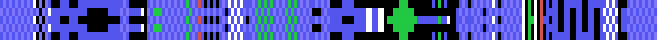
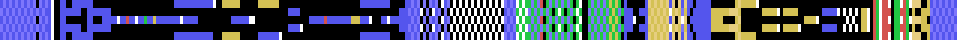
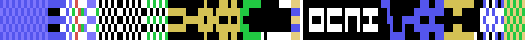

Aqui estan las catorce pistas del juego, dibujadas desde los bytes de la cinta. Ni una captura.
Cada una va tumbada: la salida a la izquierda y la meta a la derecha, y de arriba abajo las cinco casillas de ancho que tiene la pista. Los colores son los ocho tipos de casilla que el motor entiende, y no una interpretacion: salen del despachador de 0x8E65, que compara la casilla contra esos valores y contra ningun otro.
| color | que es | que hace |
|---|---|---|
| negro | agujero | la bola se cae |
| azul | pista | nada |
| verde | acelera | sube la velocidad a 6 |
| rojo | frena | la baja a 2 |
| blanco | rebota | arranca una de las curvas de salto |
| amarillo | mandos al reves | izquierda y derecha se cambian |
Y lo que hay guardado en la cinta no son estas casillas: son catorce listas de indices a una tabla de filas. Como, esta contado en El codigo.
Los nombres los da el propio juego, en la lista de 0xA4CB. Y no es casualidad que suenen a nombres de persona: las pistas se llaman como quien las hizo.

219 filas. Lleva 265 agujeros, 75 casillas que aceleran, 8 que frenan, 58 que hacen rebotar y 0 que invierten los mandos.
227 filas. Lleva 327 agujeros, 50 casillas que aceleran, 48 que frenan, 139 que hacen rebotar y 10 que invierten los mandos.
220 filas. Lleva 197 agujeros, 39 casillas que aceleran, 5 que frenan, 165 que hacen rebotar y 17 que invierten los mandos.
279 filas. Lleva 521 agujeros, 39 casillas que aceleran, 7 que frenan, 56 que hacen rebotar y 20 que invierten los mandos.
326 filas. Lleva 636 agujeros, 5 casillas que aceleran, 10 que frenan, 78 que hacen rebotar y 195 que invierten los mandos.
371 filas. Lleva 1140 agujeros, 10 casillas que aceleran, 6 que frenan, 232 que hacen rebotar y 0 que invierten los mandos.

319 filas. Lleva 681 agujeros, 103 casillas que aceleran, 29 que frenan, 119 que hacen rebotar y 174 que invierten los mandos.
335 filas. Lleva 854 agujeros, 0 casillas que aceleran, 0 que frenan, 262 que hacen rebotar y 31 que invierten los mandos.
335 filas. Lleva 506 agujeros, 5 casillas que aceleran, 0 que frenan, 454 que hacen rebotar y 43 que invierten los mandos.
155 filas. Lleva 449 agujeros, 0 casillas que aceleran, 0 que frenan, 46 que hacen rebotar y 59 que invierten los mandos.
115 filas. Lleva 286 agujeros, 25 casillas que aceleran, 4 que frenan, 47 que hacen rebotar y 30 que invierten los mandos.

175 filas. Lleva 342 agujeros, 54 casillas que aceleran, 5 que frenan, 172 que hacen rebotar y 116 que invierten los mandos.
175 filas. Lleva 538 agujeros, 9 casillas que aceleran, 13 que frenan, 73 que hacen rebotar y 50 que invierten los mandos.
239 filas. Lleva 374 agujeros, 123 casillas que aceleran, 22 que frenan, 193 que hacen rebotar y 38 que invierten los mandos.